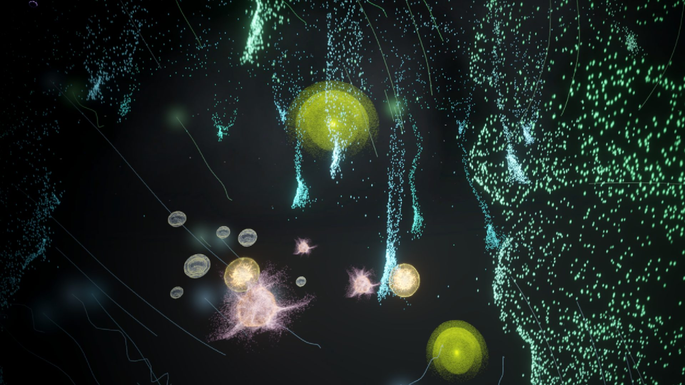
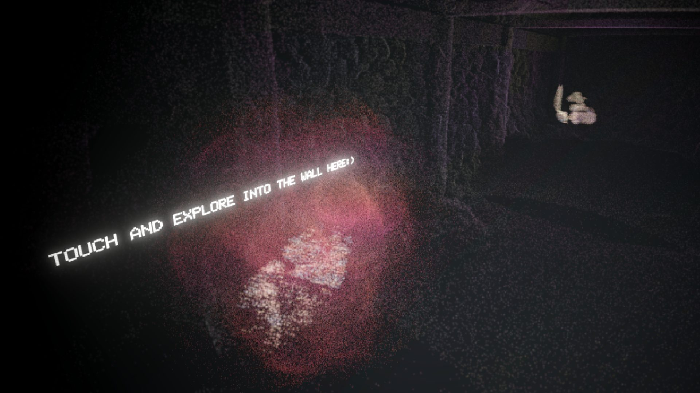
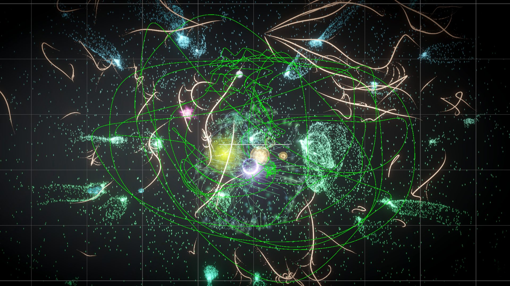
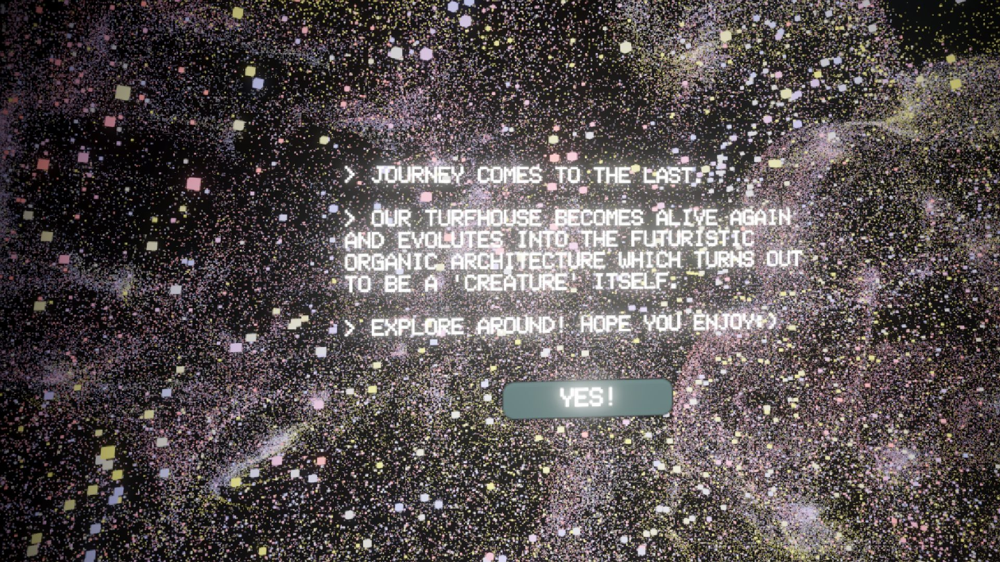
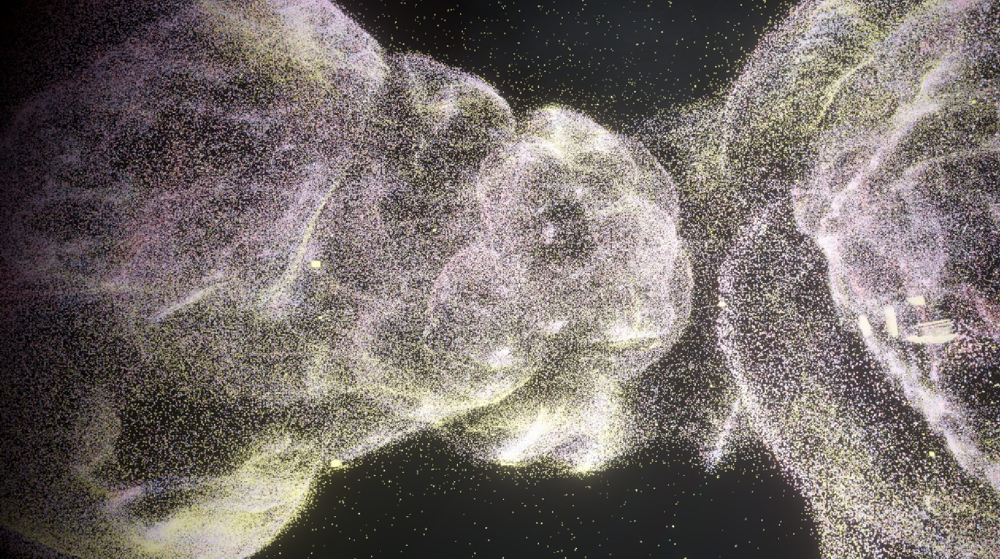

Intestine Architecture 把一栋建筑当作一具身体。它以真实冰岛草坪屋的 LiDAR 点云为底，把建筑变成一片休眠的微生物群落，等访客将其唤醒 —— 并抛出一个没有舒适答案的问题：我们能否把周围环境理解为自身免疫系统的延伸？
00结论摘要
这个作品是什么，以及它为什么成立《Intestine Architecture》是一个 VR 点云叙事作品，其中的草坪屋超级有机体正处于休眠状态。当访客第一次走进这栋房子时，它安静、没有生命迹象。而随着探索的推进，访客会逐渐恢复各个空间原本的用途，从而唤醒这栋房子曾经承载的微生物多样性。
- 建筑就是身体。这个命题从不用字幕说明 —— 它被直接建进了机制里。访客是穿过墙体进入的，而「恢复房子的微生物群落」这一动作，本身就是在恢复一套免疫系统。
- 数据是真的，不是想象的。一周冰岛实地考察、两天对 Keldur 草坪屋做 LiDAR 扫描，并实际采样鉴定屋内已有的微生物 —— 每个采样点都在平面图上标注了位置。点云记录的是真实存在的建筑。
- 尺度即界面。整段旅程在微生物尺度与人的尺度之间往复，而不依赖菜单或 HUD：墙变成传送门，房间变成栖息地，房子最后变成一只生物。
- 声音承担叙事。五个阶段各自配有明确定义的声音设计 —— 从远处嗡鸣与崩裂，到人类活动声，再到混沌 —— 即使访客只是在东张西望，故事仍在推进。
- 结局是刻意开放的。叙事弧线被明确标注为 open ending：草坪屋最终演化为未来感的有机结构，而它「本身就是一只生物」。作品让访客自己去思辨，而不是给出答案。
| 形式 | VR 点云叙事 · 思辨设计 · 数据叙事 |
| 我的角色 | 交互设计 · VR 编程 · 机制设计 · 游戏音频 · 视觉特效 |
| 团队 | 4 人 —— Yihan Lou、Ella Vuorela、Kerui Jiang、Nils Drager |
| 时间 | 2024 年 10 月 – 2025 年 2 月 |
| 地点 | 冰岛 Keldur 草坪屋 |
| 技术流程 | LiDAR 扫描 → RISCAN PRO → Houdini → Unity（VR） |
| 交付物 | 可运行的 VR 体验 · 预告片 · 录屏走查 · 实地采样数据 |
01核心论点
作品试图提出的五个观点不可见之物的再现
体验邀请玩家与微生物生态系统的虚拟再现进行互动 —— 这些生命对地球至关重要，却肉眼不可见。
模糊有机与人造的边界
当草坪屋演化为带有脉搏感的有机结构时，作品提出了关于生物系统与人造系统正在融合的关键疑问。
沉浸于建构的现实
通过让用户在微观尺度上探索微生物生命并目睹其转变，作品展现了「真实」与「数字建构」之间那条流动的界线。
对未来建筑的思辨
被重新想象的草坪屋挑战了传统建筑观念，提出一个由跨物种协作与有机适应性取代僵化静态形态的未来。
跨物种协作与适应性
通过探索建筑如何演化以纳入生物元素，作品批判了当下以人为中心的范式，并提出另一种生存方式。
为什么是开放提问，而不是论断
作品的目标是质疑既有现实，而不是主张一个新现实 —— 这正是它最终以思辨收尾、而不给出结论的原因。
02概念与追问
催生整个作品的那个问题体验中的一切都源自同一个追问 —— 我们能否把周围环境理解为自身免疫系统的延伸？为了让这个问题可以被回答、而不只是停留在诗意层面，它被拆成了两条可以各自独立探索的研究轴。
空间中的体验
特定的微生物会分布在草坪屋的哪些位置？不同区域的微生物群落各不相同 —— 因此在建筑中移动，同时也是在栖息地中移动。
时间中的体验
草坪屋建成之后，它的微生物生命如何演化？微生物会随时间演变 —— 因此整次访问被编排为一段生命周期，而不是一次导览。
| 前提设定 | 在体验中的含义 |
|---|---|
| 超级有机体正在沉睡 | 人类与动物等关键组成部分的缺席，限制了微生物生命的活跃 —— 因此房子一开始处于休眠状态。 |
| 微生物之墙 | 墙体中的生命能以多大程度自主回应环境变化？墙不是布景，而是访客遇到的第一个栖息地。 |
| 草坪屋虚构 | 两条研究轴的汇合点：一栋被外推的草坪屋，它不再是建筑，而是一个有机体。 |
把追问拆成两条独立轴。直接问一个抽象问题（「环境是免疫系统的一部分吗？」）产出的是一篇文章。把它拆成空间轴与时间轴后，就得到了两种彼此正交的内容结构 —— 你在哪里 与 你在什么时候 —— 它们可以分别设计、再重新组合。正是这次拆分，让一个五阶段的旅程得以在完全没有解说的前提下成立。

03实地考察与数据流程
数据从哪来这里的点云不是美术素材，而是一份测绘成果。我们花了一周时间在冰岛实地考察，其中两天用于研究 Keldur 农场：扫描草坪屋内部，为 VR 体验生成点云数据。与此同时，我们采集样本以鉴定屋内原本就存在的微生物，并把每个采样点精确标注在地图上 —— 因此最终作品里每一个发光的微生物，都能追溯回它被真实发现的位置。
现场 LiDAR 测绘
用两天扫描 Keldur 草坪屋内部，并在平面图上记录各个采样点。
RISCAN PRO
原始扫描数据配准、拼接，导出为点云数据。
Houdini
点云清理、优化，并预处理为可实时运行的格式。
Unity
重组为可探索的 VR 运行环境，并在扫描数据之上叠加特效与音频。

让思辨落在一份真实测绘之上。思辨设计一旦所描述的世界是凭空捏造的，它的力量就消失了。把体验锚定在一栋真实扫描的建筑上 —— 以及从这栋建筑中真实采集的微生物上 —— 意味着思辨层是叠加在纪实证据之上的。访客不需要接受一个虚构的世界，他们被问的是：一个真实的世界可以变成什么样。
04叙事架构
五个阶段、两种尺度、四个情绪节拍整个体验沿一条生命周期弧线分为五个阶段。每个阶段都用四个维度来定义 —— 场景、尺度、交互、声音 —— 因此故事是由环境承载的，而不是由说明文字承载的。其中最重要的变量是尺度：访客在微生物尺度与人的尺度之间往返穿越，而正是这种穿越让建筑被读成一具身体。
| 阶段 | 尺度 | 交互 | 声音设计 |
|---|---|---|---|
| 1 —— 墙体内部 | 微生物尺度 | 环顾四周并向前移动。 | 远处的嗡鸣、崩裂与剥落声。 |
| 2 —— 微生物群落浮现 | 微生物尺度 | 环顾四周；触碰光点会让它们稍稍向前移动。 | 声音随着每一组微生物的出现逐层叠加，并映射出微生物之间相互作用的声响。 |
| 3 —— 进入草坪屋 | 微生物 → 人 | 当访客走到线性墙体的尽头，会被传送进草坪屋。 | 人类活动的声音。 |
| 4 —— 唤醒房子 | 人的尺度 | 在草坪屋中走动，利用其免疫系统中闪烁的光点重新唤醒这栋房子。 | 先是一段渐弱的声音，随后是点亮的声音。 |
| 5 —— 「超级有机体」苏醒 | 人的尺度 | 访客可以探索被转化后的房子，并改变建筑本身的形态。 | 人类与动物的活动声（走动、奔跑、动物叫声），随后是混沌的声音。 |
四个情绪节拍
出生与生长
墙体开始有生命，微生物群落浮现并增殖。
离开
访客被带出墙体，进入人的尺度下的草坪屋。
回来
重返房子时，访客发现它已经改变，并开始将其唤醒。
唤醒
超级有机体回归 —— 而叙事弧线选择向外敞开，而非收束。

把声音当作叙事层来设计，而不是后期润色。在 VR 里访客可以朝任何方向看 —— 这意味着无法依赖画面构图来推进事件。为每个阶段定义明确的声音（嗡鸣 → 微生物互动 → 人类活动 → 混沌），就创造出一条不依赖视觉的叙事主干，即使访客看错了方向，故事依然在走。因此音频被设计为主要的叙事通道，视觉则是给它的奖励。
05交互设计
八个场景是如何被定义的体验中的每一个场景都用同一套三行模板来分镜 —— 场景、动作、玩家。真正起作用的是第三行：把「访客此刻在做什么」写下来，会强制设计保持在「体验」的层面，而不是退化成一组图像序列。
| # | 场景 | 动作 | 玩家 |
|---|---|---|---|
| 01 | 开始界面 | 体验从虚空（墙体）中开始，玩家只看到一片空无。 | 按下「开始」后，玩家可以自由探索。 |
| 02 | 进入没有生命的草坪屋 | 穿过传送门后，玩家发现自己已在草坪屋内部。 | 玩家探索各个房间。 |
| 03 | 发现微生物生命 | 探索过程中，某些区域突然开始发光。 | 玩家触碰发光的区域。 |
| 04 | 回到虚空 | 玩家现在可以近距离欣赏之前在房子里发现的微生物，它们被放大到实体大小。 | 玩家走近观察这些微生物。 |
| 05 | 切换到草坪屋尺度 | 房子出现了细微变化，新的区域可以被探索。 | 玩家与微生物群落进行互动。 |
| 06 | 切换到微观尺度 | 虚空中飞舞的微生物越来越多，它们似乎在彼此互动。 | 玩家尝试触碰这些微生物。 |
| 07 | 有韧性的微生物群 | 虚空被微生物填满，特效呈现出共生连接。 | 玩家成为被动的观察者。 |
| 08 | 草坪屋的最终形态 | 草坪屋转化为带有心跳般搏动的有机形态结构。 | 玩家可以改变建筑的形状。 |
操作方式
操作被刻意压到最少，以便注意力始终停留在环境上：左摇杆移动、右摇杆转向、食指扳机点击 —— 这是访客全程唯一需要的三个输入。

为每个节拍写下玩家的动词。只描述场景的分镜会产出漂亮的分镜板，和一个被动的体验。为每个场景增加一行专门的「玩家」栏后，浮现出两个塑造了整个作品的决定：高潮段落（07）应当刻意让访客成为被动的观察者；而最后一段（08）则应当把控制权交还访客，让他能够改变建筑的形状。被动与能动，成了经过设计的节拍，而不是意外。
06视觉语言
体验内实拍静帧视觉系统直接由扫描数据本身构成：点云没有被当作技术痕迹隐藏起来，而是被用作世界的表面，在其上叠加发光的微生物簇与用特效绘制的共生连接。最终呈现出既有测绘感、又有生命感的双重性 —— 而这正是作品想要主张的那种模糊。





07视频呈现
观看实际运行效果录屏走查
08团队与署名
谁做的Yihan Lou
负责交互设计与五阶段叙事结构、Unity 中的 VR 编程、核心机制设计、游戏音频设计以及视觉特效层。
Ella Vuorela
项目合作者。
Kerui Jiang
项目合作者。
Nils Drager
项目合作者。
09结论
哪些经验可以迁移到其他项目这个作品最可迁移的决定，是把论点做成结构，而不是做成解说。它提出的每一个主张 —— 建筑可以是一具身体、有机与人造早已在融合、尺度决定了共情 —— 都是通过机制、尺度与声音传递的，而不是通过解释。一位从头到尾没读过任何文字说明的访客，离开时依然已经完成了从微生物尺度到人的尺度、再回来的穿越。在沉浸式媒介里，这正是「图解一个想法」与「让人住进一个想法」之间的差别。